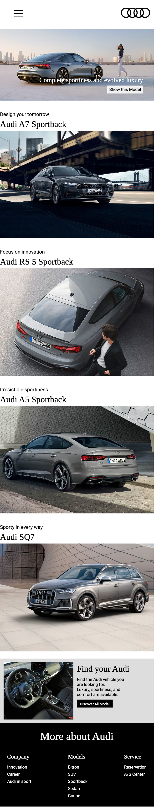

아우디
영상과 애니메이션을 사용하여 시각적 재미를 더하였고 브랜드와 어울리는 아이콘을 직접 제작하여 일관성 있는 톤앤무드를 구성하였습니다. JS와 Slick 플러그인을 사용하여 media 콘텐츠를 슬라이드로 구현하였습니다.
- TYPEResponsive Web
- TOOLHTML, CSS, JS(JQuery), Slick, Ps
- COLOR
- PERIOD디자인 4일(30H), 구현 7일(40H)
세련된
차분함
심플함
*QR코드 스캔하시면 모바일 버전을 보실 수 있습니다.